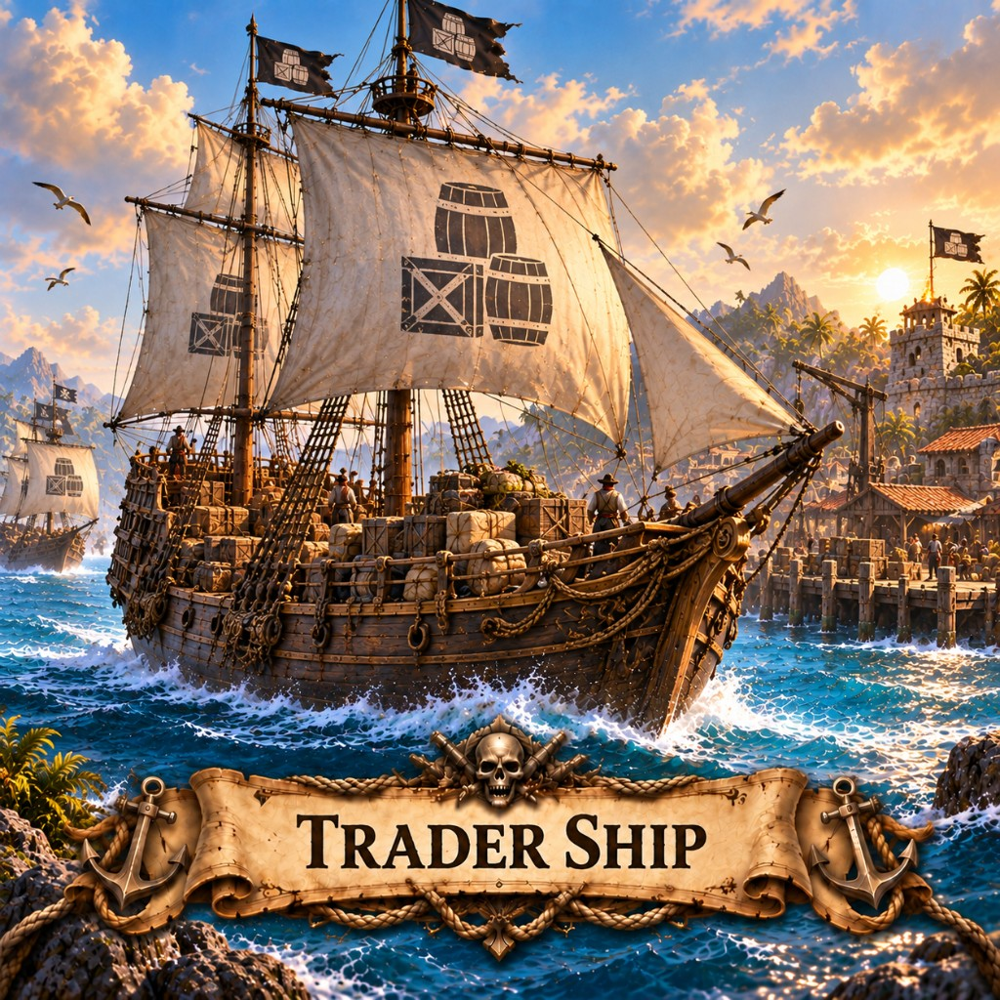

Trader ships in Marauder's Sea sail between ports for gold. Capture them with warships; mines ignore them.

White canvas and a stencil of barrels — the honest lie of the sea. A Trader Ship is not a prize until a Warship makes her one. Ports keep sending them because gold does not swim by itself.
Build more Ports if you want more white sails. Guard your lanes with Warships, or hunt the other captain's convoy and live off their ledger. A silent harbor usually means someone is at war — or someone stole the fleet. Naval mines ignore traders on purpose.
Back to the building list or pick a map like X Marks the Spot and play this mobile strategy game in the browser.